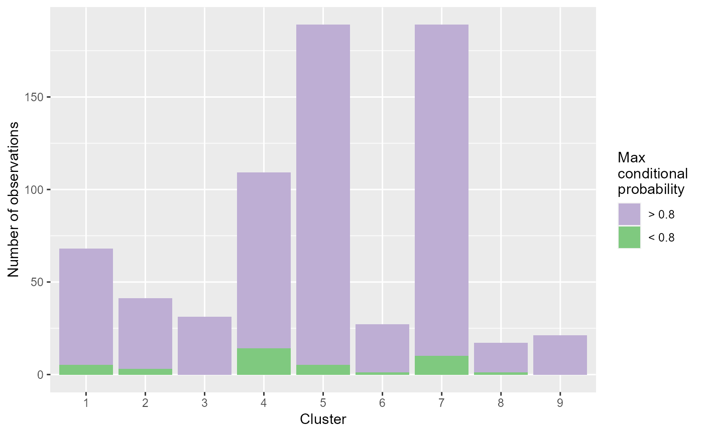
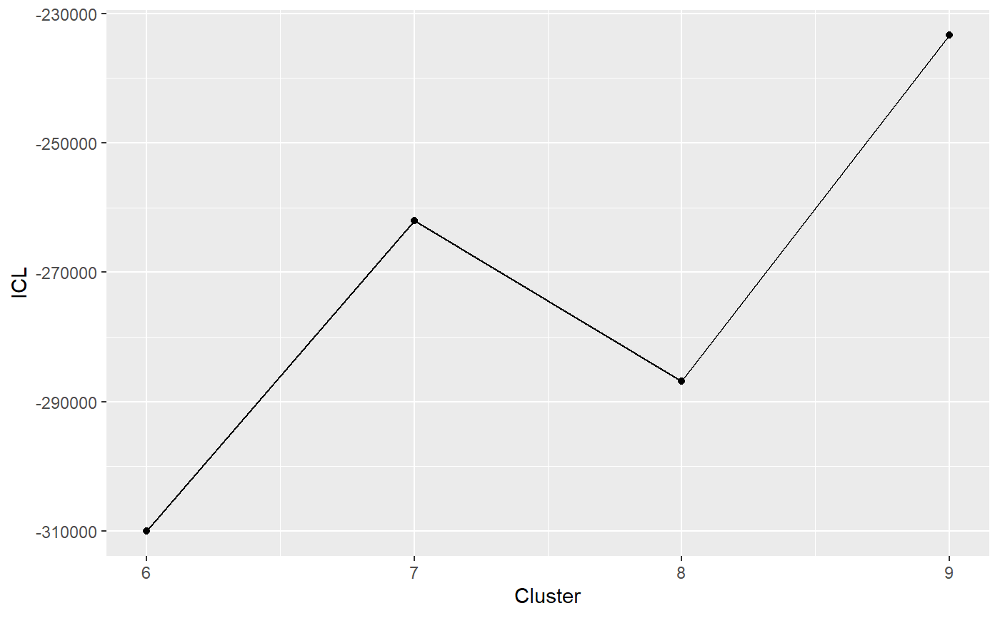

draw_coseq_run : displays the indications of clustering
draw_coseq_run(run_pois, plot = "ICL")
| run_pois | result of a coseq run |
|---|---|
| plot | plot to display, eather integrated Complete Likelihood, or barplots of the posterior probabilities for the clustering. Value must be "ICL" or "barplots". |
plot describing the quality of the clustering process
data("abiotic_stresses") genes <- abiotic_stresses$heat_DEGs clustering <- DIANE::run_coseq(conds = c("C", "H", "SH", "MH", "SMH"), data = abiotic_stresses$normalized_counts, genes = genes, K = 6:9)#> **************************************** #> coseq analysis: Poisson approach & none transformation #> K = 6 to 9 #> Use set.seed() prior to running coseq for reproducible results. #> **************************************** #> Running K = 6 ... #> [1] "Initialization: 1" #> [1] "Log-like diff: 0.0412174002696979" #> [1] "Log-like diff: 0.00816919578990039" #> [1] "Log-like diff: 0.00192461009646205" #> [1] "Log-like diff: 0.000456460812024773" #> [1] "Log-like diff: 0.00010861241324811"#> #> #> #> #> #> #>#> #> #> #> #> #> #>#> #> #> #> #> #> #>#>DIANE::draw_coseq_run(clustering$model, plot = "barplots")#> $probapost_barplots#>DIANE::draw_coseq_run(clustering$model, plot = "ICL")#> $ICL#>